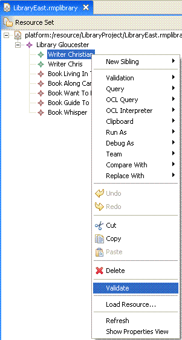

This example describes the usage of the validation framework within the SDK.
It demonstrates how to implement an EMF EValidator interface that
delegates to model validation service and adapts the results to the EMF Diagnostic API.
Please refer to the document Model Services Layer Examples Overview for reviewing the library meta-model used as the basis for demonstrating the capabilities in this example.
This example plug-in is named org.eclipse.emf.validation.examples.adapter. This plug-in
does not contribute any menu items. It defines a client context and binds the context to a constraint category.
The client context enablement uses the Eclipse property tester API. This plug-in registers the EValidator
implementation with the EValidator.Registry through the Eclipse org.eclipse.ui.startup
extension point. The funtionality is triggered by invoking the menu item Validate from the editor's
context menu or main menu.
Please refer to the tutorial Validation Adapter Tutorial for reviewing the code samples within this example
Refer to this example if you need: